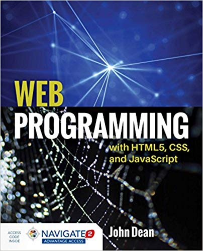
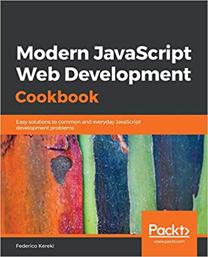
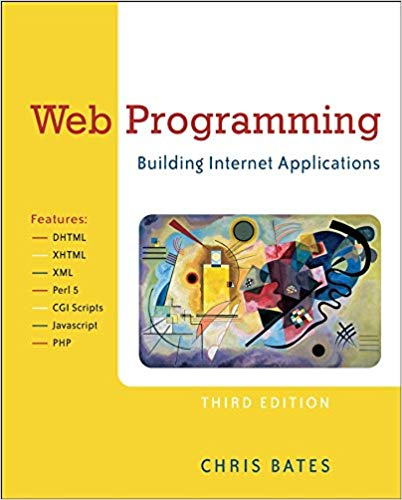

Introduction
F28WP Web Programming
2020-2021
Introduction to Web Programming
[pause][pause][pause][pause][pause][pause][pause][pause][pause][pause]
Welcome to Web Programming
Welcome to Web Programming.
We hope you enjoy this course.
Overview
What is this Course about?
What is the Syllabus?
What are the Learning Outcomes?
What is the Assessment Criteria?
What is the Timetable?
FAQ about Course/Studying
Questions Discussion
Today's lecture will explain what this course is about and what to expect.
For example, the syllabus, teaching schedule and how you'll be assessed.
We'll also provide some simple examples on web programming to help you see why the topic is so important.
[pause]
We will finish up the lecture with a set of recommended reading and a closing discussion of the material and coursework.
If you look at the various tools and technologies around on web development, you'll find the answer is not so simple.
No single web programming tool or language does everything.
Hence, you have to be proficient in a variety of web technologies.
For example, if you're developing a server-client system you need to understand database technologies, security provisions and more.
Timetable
2 x Lectures
Each week a two lecturse in combination with a set of support material (lab exercises, quizzes and activities) are provide to ensure you progress comfortably without getting overloaded.
[pause]
Remember, you will have other courses and courseworks this semester - so you need to manage your time. Not forgetting, you should be reading around the subject to complementing the teaching material with additional resources [pause] (from the recommended reading list such as online articles and on).
This will help you master the subject in sufficient depth and breath.
Slide Features
Home button, voice commentary, ..
The lecture slides have various features.
Note you can find your way back to the homepage at any time by clicking the home button in the bottom left.
Also the voice commentary - which explains the details of the slides.
[pause]
Course Material
Easily accessible and structured on GitHub
(Note coursework assessments will be done through CANVAS)
As you must be aware.
Since the material is all on GitHub it should be easy for you to access everything easily.
[pause]
The slides are interactive, so you can work through them and try out examples.
Also there are activities, such as, quizzes and puzzles to work through and various web-based game demos for you to look at and go through the code to help you with your coursework.
[pause]
You have access to all the material in one place (easy to navigate layout).
All the interactive lecture slides.
Supplementary Notes.
Lab exercises to work through.
Revision quiz questions.
Example
As an example, remember the slides have embedded interactive activities.
So as you work through the slides, you can pause on particular slides and try out activities.
[pause]
For example, in the activity on this page - a JSFiddle program is shown. So you can click on the tabs to see the Javascript, HTML and CSS and the generated output.
[pause]
You can edit the scripts and rerun the program.
[pause]
Experiment and try GitHub this week - `GitHub guide' tutorials/examples.
For those of you who are new to GitHub and using version control systems to manage and track your projects. Work through the various articles and exercises available on the github website this week in the lab.
Git Overview Video
VIDEO
Short video to explain Git.
What is the best way to master web programming?
What do think is the best way to MASTER web programming?
[pause]
Practice, practice, practice
Hands-on
Typing examples, experimenting, trying,
Practice, practice and more practising.
[pause]
Simply watching isn't enough.
You should be actively taking part in the course.
[pause]
Typing in examples, experimenting and reading around the subject.
You can visit the html five test website for your browser score.

Web Programming With HTML5, CSS, And Javascript Paperback - 9 Jan 2018
by John Dean (Author)
Publisher: Jones and Bartlett Publishers, Inc; Pap/Psc edition (9 Jan. 2018)
Language: English
ISBN-10: 9781284091793
ISBN-13: 978-1284091793
Here are just some example of popular texts on the subject for you to look over.
[pause]
Web Programming With HTML5, CSS, And Javascript by John Dean.
Web Coding \& Development All-in-One For Dummies (For Dummies (Computer/Tech)) Paperback - 22 Jun 2018
by Paul McFedries (Author)
Publisher: John Wiley \& Sons (22 Jun. 2018)
Language: English
ISBN-10: 1119473926
ISBN-13: 978-1119473923
Web Coding and Development all in one by Paul McFedries.

Modern JavaScript Web Development Cookbook: Easy solutions to common and everyday JavaScript development problems Paperback - 26 Dec 2018
by Federico Kereki (Author)
Publisher: Packt Publishing (26 Dec. 2018)
Language: English
ISBN-10: 1788992741
ISBN-13: 978-1788992749
Modern JavaScript Web Development Cookbook by Federico Kereki.

Web Programming: Building Internet Applications Paperback - 13 Apr 2006
by Chris Bates (Author)
Publisher: John Wiley \& Sons; 3rd edition (13 April 2006)
Language: English
ISBN-10: 0470017759
ISBN-13: 978-0470017753
Web Programming: Building Internet Applications by Chris Bates.
Summary
• What this course is about
At the end of this short lecture, you should have a good understanding of what is expected of you.
[pause]
That is, what this course is about and how you will be assessed.
[pause]
This is not a theoretical course, but a hands-on course, so you will be required to regularly work through examples and exercises.
To do this week ...
• Read over the lectures
This week, try and get a head start.
Review the lecture slides and supplementary material. [pause]
So if there are any gaps in your knowledge or abilities you can catch up (e.g., using basic html, text edit or a web browser).
[pause]
Work through practicals and exercises.
Get into a good habit, such as, reading around the subject and working through the quizzes (sooner instead of later).
[pause]
Get started with GitHub.
[pause]